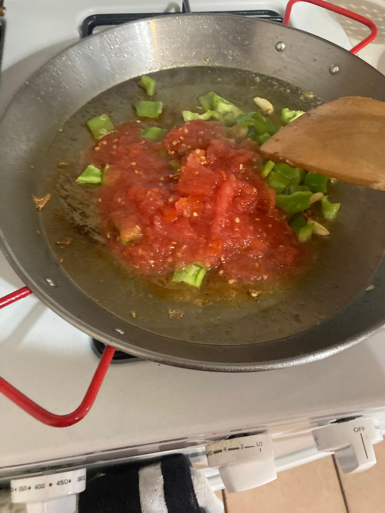

- Limpiar los calamares y cortarlos en aros.
- Rallar el tomate.
- Pelamos las gambas. Reservar las cáscaras y las cabezas para hacer caldo. Yo no las encontré con cabezas en Pittsburgh, pero le darían más sabor al caldo.
- Pelar y picar los ajos.
- Cortar el pimiento.
- Trocear el medio pollo.
- Hacer el fumet. En una olla, echar un poco de aceite y dorar las cáscaras y las cabezas de las gambas dos minutos a fuego medio. Ir machacando las cabezas para sacar todo el jugo. Echar el vasito de vino blanco y poner un poco a fuego alto para que se evapore el alcohol. Cuando ya no huela a alcohol, añadir un litro o litro y medio de agua y dejar cocer 15min. Colamos el caldo y reservamos.
- Echar aceite en la paella para empezar el sofrito.
- Dorar el pollo hasta cocinar un poco y reservar. Lo añadiremos más tarde para terminar de cocinar.
- Echar el ajo troceado y justo después el pimiento verde.
- Cuando el pimiento esté un poco tostado, añadir el tomate rallado. Esperar a que se evapore el agua del tomate y echar los calamares.
- Cuando el calamar empiece a saltar, tostar el azafrán en un hueco de la paella y reintroducir el pollo en la paella y dar unas vueltas. Después, echar el arroz. Medir el volumen de arroz en vasos. nacarar el arroz antes de añadir el caldo.
- Echar dos vasos de fumet por cada uno de arroz y echar un poco de sal. No tocar y esperar hasta que se haga el arroz. Cuando quede muy poco fumet, añadir las gambas que se irán haciendo en la paella.
- Dejar reposar 5 o 10 minutos y a disfrutar!.
